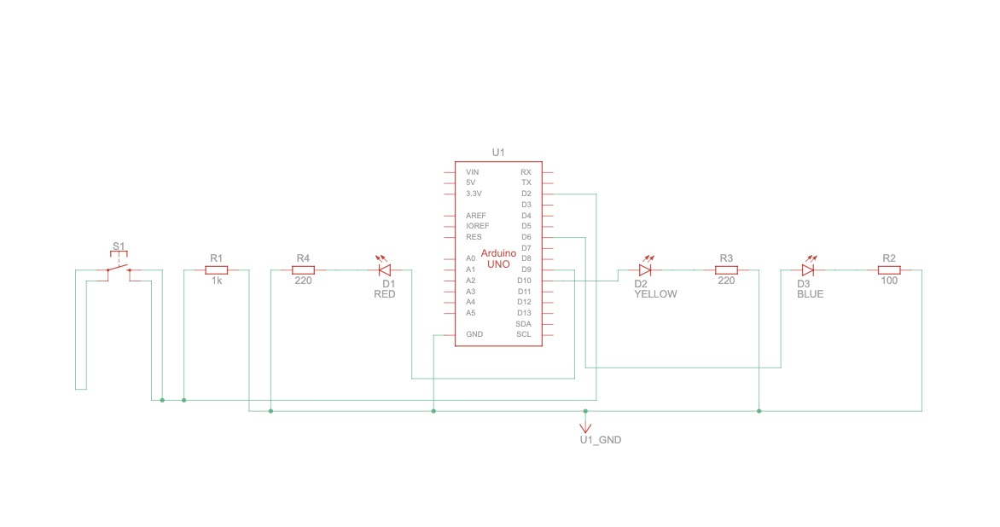
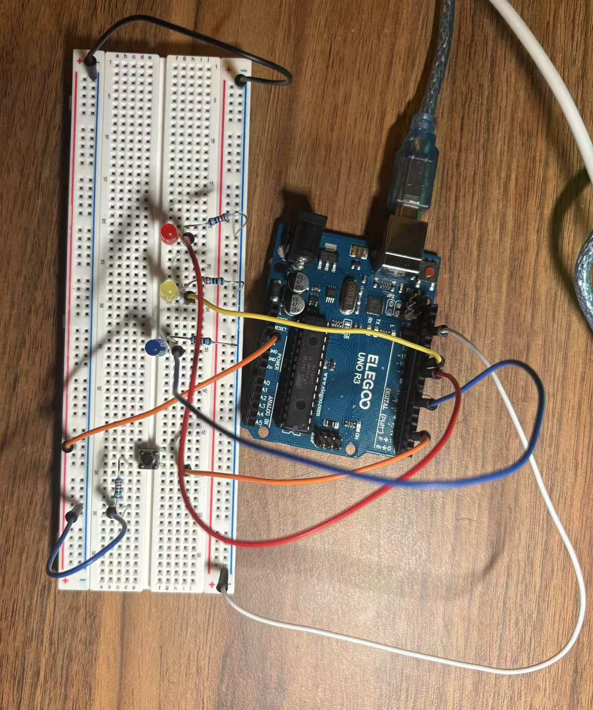
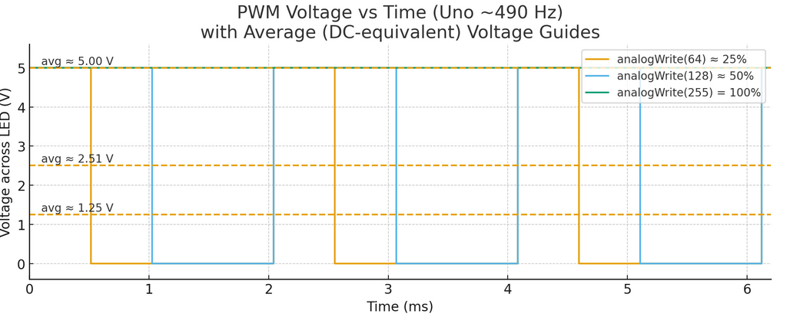

{kind=link}
schematic
Schematic!
{kind=link}
circuit
circuit!
Circuit operation

Circuit operation!
graph!
X axis is time and the Y axis is voltage
Use Ohm’s law for a series resistor:
R = (VS − VF) / I
| LED Color | Given | Computation | Result (Pick Standard Value) |
|---|---|---|---|
| Red | VS=5 V, VF≈2.0 V, I=0.02 A | R = (5 − 2.0) / 0.02 = 150 Ω | 220 Ω |
| Yellow | VS=5 V, VF≈2.2 V, I=0.02 A | R = (5 − 2.2) / 0.02 = 140 Ω | 220 Ω |
| Blue | VS=5 V, VF≈3.0 V, I=0.02 A | R = (5 − 3.0) / 0.02 = 100 Ω | 100 Ω |
Schematic!
circuit!
Circuit operation!
X axis is time and the Y axis is voltage
// ===== Configuration =====
// Red LED
int Red = 9;
// Yellow LED
int Yellow = 10;
// Blue LED
int Blue = 6;
// Button D2
int BTN = 2;
// fade step size
int STEP = 5;
// fade step size
int STEP_DELAY = 20;
// true=start, false=stop
volatile bool running = true;
// Debounce variables
unsigned long lastChange = 0;
// Debounce window (ms)
const unsigned long debounceMs = 25;
// INPUT_PULLUP: HIGH=Not pressed, LOW=Pressed
int stableBtn = HIGH;
// Turn off lights at once
void allOff() {
analogWrite(Red, 0);
analogWrite(Yellow, 0);
analogWrite(Blue, 0);
}
// Read button and debounce, detect "press" to switch play/pause
void pollButtonToggle() {
int readNow = digitalRead(BTN);
if (readNow != stableBtn) {
lastChange = millis(); // Record change time
}
if (millis() - lastChange > debounceMs) {
// Confirm after stabilization
if (stableBtn == HIGH && readNow == LOW) {
// Detect a press -> switch play/pause
running = !running;
}
stableBtn = readNow;
}
}
// Stay at the current brightness when paused and continue polling the button until playback resumes
void waitWhilePaused(uint8_t pin, int value) {
while (!running) {
pollButtonToggle(); // Wait until you press Resume again
analogWrite(pin, value);
delay(5);
}
}
// Perform a fade-in->fade-out on a certain LED, and pause/resume it at any time
void fadeOne(uint8_t pin) {
allOff();
// Fadein 0->255
for (int v = 0; v <= 255; v += STEP) {
pollButtonToggle();
if (!running) waitWhilePaused(pin, v);
analogWrite(pin, v);
delay(STEP_DELAY);
}
// Fadeout 255->0
for (int v = 255; v >= 0; v -= STEP) {
pollButtonToggle();
if (!running) waitWhilePaused(pin, v);
analogWrite(pin, v);
delay(STEP_DELAY);
}
// Guaranteed to be destroyed at the end
digitalWrite(pin, LOW);
}
void setup() {
pinMode(Red, OUTPUT);
pinMode(Yellow, OUTPUT);
pinMode(Blue, OUTPUT);
pinMode(BTN, INPUT_PULLUP); // Internal pull-up, pressed = LOW
allOff();
}
void loop() {
fadeOne(Red); // Red first
fadeOne(Yellow); // then Yellow
fadeOne(Blue); // then Blue
// Repeated cycle
}
On an Uno PWM pin (~490 Hz), analogWrite(64) ≈ 25%,
analogWrite(128) ≈ 50%, and analogWrite(255) = 100%.
PWM keeps the instantaneous level at 0 or 5 V; brightness tracks the duty cycle.
The dashed lines mark the average voltages (~1.25 V, ~2.51 V, and 5 V).
Per the assignment, assume only LEDs draw current. My resistors are Red 220 Ω, Yellow 220 Ω, and Blue 100 Ω. Using a 5 V supply and typical forward voltages (Red ≈ 2.0 V, Yellow ≈ 2.2 V, Blue ≈ 3.0 V):
I = (5−2.0)/220 ≈ 13.6 mAI = (5−2.2)/220 ≈ 12.7 mAI = (5−3.0)/100 ≈ 20.0 mA
My firmware fades one LED at a time; each LED averages ~50% duty while active and each color runs ~⅓ of the time.
The time-averaged LED current is:
Iavg ≈ (13.6 + 12.7 + 20.0) / 6 ≈ 7.7 mA.
With a 1200 mAh battery:
t ≈ 1200 mAh / 7.7 mA ≈ 155 hours (~6.5 days).
Iavg = (20+20+20)/6 = 10 mA →
runtime ≈ 120 hours (~5 days).
analogWrite(pin, 255)).Typical VF ranges: Red ≈ 1.8–2.2 V, Yellow ≈ 2.0–2.2 V, Blue ≈ 2.8–3.3 V.
Example write-up: “Measured VF for the Blue LED at 255 is ___.__ V, close to the theoretical ~3.0 V; differences come from part variation, current level, and temperature.”
I used AI to: I verified the hardware code, identified the PWM pins (D6/D9/D10), and measured the LED forward voltage with a multimeter. Using AI sped up documentation and sanity checking; I verified the circuit and values myself.